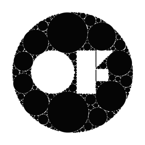
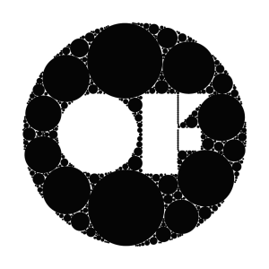
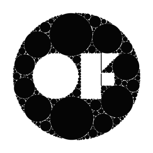

Bryce
Code
Info
This page lists public and private software communities that I have contributed to in my life.
Personal Open Source Code
Github/Bryce-Summers
Open Source Communities

Closed Source Communities
Geosteiner
Bryce
 
